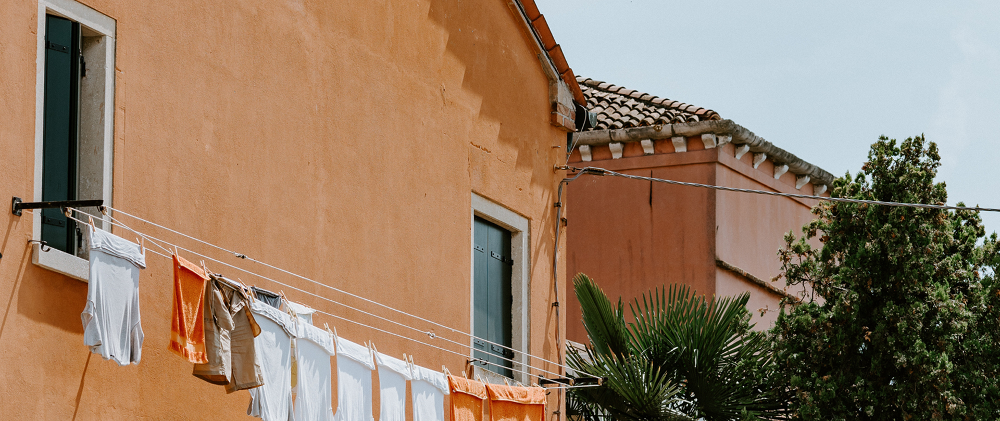
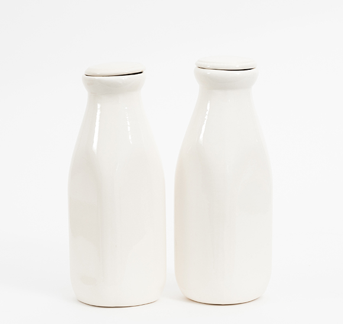
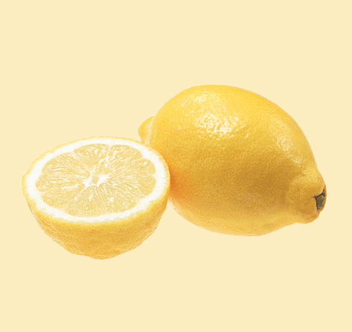
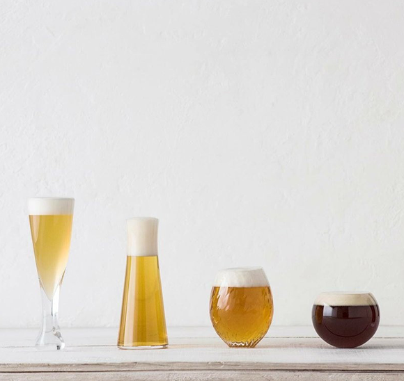

세탁
식품의 섭취 가능 기한을 의미하는 것은 유통기한이 아닌 소비기한입니다.
소비기한이 지나 섭취할 수 없는 식품을 활용하여 효율적인 세탁을 할 수 있습니다.
식품들의 다양한 재활용 방법을 알아보세요.



식품의 섭취 가능 기한을 의미하는 것은 유통기한이 아닌 소비기한입니다.
소비기한이 지나 섭취할 수 없는 식품을 활용하여 효율적인 세탁을 할 수 있습니다.
식품들의 다양한 재활용 방법을 알아보세요.